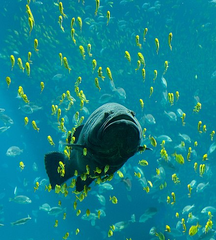

"For fish as eaten by humans, see Fish as food. For other uses, see Fish (disambiguation). For the similar monophyletic clade, see Vertebrata."
- Wikipedia
Fish are gill-bearing aquatic craniate animals that lack limbs with digits. They form a sister group to the tunicates, together forming the olfactores. Included in this definition are the living hagfish, lampreys, and cartilaginous and bony fish as well as various extinct related groups. Tetrapods emerged within lobe-finned fishes, so cladistically they are fish as well. However, traditionally fish are rendered paraphyletic by excluding the tetrapods (i.e., the amphibians, reptiles, birds and mammals which all descended from within the same ancestry). Because in this manner the term "fish" is defined negatively as a paraphyletic group, it is not considered a formal taxonomic grouping in systematic biology. The traditional term pisces (also ichthyes) is considered a typological, but not a phylogenetic classification.
The earliest organisms that can be classified as fish were soft-bodied chordates that first appeared during the Cambrian period. Although they lacked a true spine, they possessed notochords which allowed them to be more agile than their invertebrate counterparts. Fish would continue to evolve through the Paleozoic era, diversifying into a wide variety of forms. Many fish of the Paleozoic developed external armor that protected them from predators. The first fish with jaws appeared in the Silurian period, after which many (such as sharks) became formidable marine predators rather than just the prey of arthropods.
Most fish are ectothermic ("cold-blooded"), allowing their body temperatures to vary as ambient temperatures change, though some of the large active swimmers like white shark and tuna can hold a higher core temperature.[1][2]
Fish can communicate in their underwater environments through the use of acoustic communication. Acoustic communication in fish involves the transmission of acoustic signals from one individual of a species to another. The production of sounds as a means of communication among fish is most often used in the context of feeding, aggression or courtship behaviour.[3] The sounds emitted by fish can vary depending on the species and stimulus involved. They can produce either stridulatory sounds by moving components of the skeletal system, or can produce non-stridulatory sounds by manipulating specialized organs such as the swimbladder.[4]
Fish are abundant in most bodies of water. They can be found in nearly all aquatic environments, from high mountain streams (e.g., char and gudgeon) to the abyssal and even hadal depths of the deepest oceans (e.g., gulpers and anglerfish), although no species has yet been documented in the deepest 25% of the ocean. With 33,600 described species, fish exhibit greater species diversity than any other group of vertebrates.[5][6]
Fish are an important resource for humans worldwide, especially as food. Commercial and subsistence fishers hunt fish in wild fisheries (see fishing) or farm them in ponds or in cages in the ocean (see aquaculture). They are also caught by recreational fishers, kept as pets, raised by fishkeepers, and exhibited in public aquaria. Fish have had a role in culture through the ages, serving as deities, religious symbols, and as the subjects of art, books and movies.

Scientific Classification
Kingdom:
Phylum:
(unranked)
Animalia
Chordata
Vertebrata
Contents
Evolutions
Taxonomy
Diversity
Anatomy and physiology
Gills
Air breathing
Rat Infestation Takes a Toll on Nearby Coral Reefs
When humans set forth on the seas to explore new lands, they often bring with them unintended stowaways: rats. If the animals gain a foothold on an island, they can devastate local fauna. And a study published yesterday (July 11) in Nature finds that the rodents’ destruction extends into the seas surrounding islands, starving the ecosystems around coral reefs of nutrients.
“The depth of this research shows just how much ecosystems impacted by invasive rats have to lose,” Holly Jones of Northern Illinois University who was not involved in the study tells The Atlantic.
In the study, researchers compared six rat-infested islands in the Indian Ocean with six nearby islands that are rat-free. Soil and plants on the rat-free islands had more of a nitrogen isotope that’s common in marine food sources, which birds commonly consume and then poop out on islands. The research team also found seabird densities were 760 times higher on the uninfested islands. Fewer birds on the invaded islands means less guano, the researchers write, which leads to less nitrogen seeping into the surrounding ocean to feed organisms such as plankton that form the basis of the food web. Overall, there was 48 percent more fish biomass in coral reefs adjacent to the rat-free islands than in reefs near islands with invasive rats.
“This is one of the clearest examples so far, where eradicating rats will lead to increased numbers of seabirds and this will bolster the coral reef,” coauthor Nick Graham of Lancaster University in the U.K. tells the BBC.